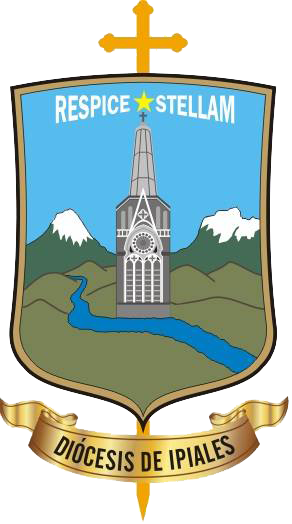
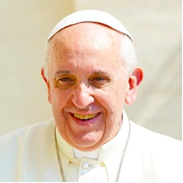
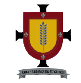

ESCUDO DIOCESANO
PapaS.S. Francisco
ESCUDO EPISCOPAL
Monseñor José Saúl Grisales Grisales
Haciendo un recorrido histórico de la vida de nuestros pueblos de la Diócesis de Ipiales, en la época precolombina constatamos que los pueblos de los Pastos, los Abades, los Quillacingas y los Awa, que poblaron nuestra tierra nariñense, fueron pueblos relativamente pacíficos, por haber vivido largos periodos de paz en su historia. La tribu más belicosa fue la de los Sindaguas, que poblaron la región del Decio, La Llanada, Sotomayor, Cumitara y Barbacoas. Su ocupación principal era la guerra a los pueblos vecinos. Sin embargo, nuestros antepasados indígenas tuvieron que guerrear con los Incas, quienes después de un largo periodo de guerra los sometieron y los obligaron a pagar tributo.Más tarde, a partir de 1500, cuando llegaron los españoles a conquistar tierras americanas, los nativos opusieron resistencia, pero luego fueron vencidos con la obligación de pagar tributos. A esto se debe la cultura de dependencia que lleva arrastrando a lo largo de su historia nuestra gente. La cultura violenta y libertina que estamos viviendo es foránea, sin embargo, la opresión, el atraso y la marginación por parte del gobierno central, fue incubando el resentimiento y la violencia que vive actualmente nuestro pueblo. La cultura libertina y violenta ha sido alimentada en buena medida por los medios de comunicación social.
La fe vivida en su expresión de la religiosidad popular desde la conquista hasta nuestros días, con la veneración a las imágenes, los sacramentos y los sacramentales, ha dado como resultado una fe débil, basada en devociones y en poco compromiso cristiano. Los primeros misioneros que llegaron con los conquistadores fueron los franciscanos que trajeron las imágenes de Jesús crucificado a varias parroquias y los dominicos las imágenes de la Virgen María. Los franciscanos en su tarea evangelizadora insistieron en Jesús crucificado y los dominicos en la devoción mariana. De ahí vienen las dos grandes devociones que jalonan nuestra religiosidad popular: la devoción a Jesús crucificado y la devoción a la Virgen María. Todos los misioneros que llegaron a nuestra tierra en la época de la conquista y de la colonia insistieron en la práctica de la santa misa y de la confesión. La religiosidad popular ha organizado una incoherencia entre la vida y la fe, con el agravante de una gran importancia religiosa, que han abierto las puertas a las sectas religiosas y a la indiferencia religiosa de muchos bautizados.Después del Concilio de Trento, clausurado en 1562, la imagen de la Iglesia piramidal se acentuó, estableciéndose la “iglesia docente y la iglesia discente”.
Este fenómeno originó la dependencia de Dios y de la iglesia, con una escasa participación del pueblo de Dios en la tarea de la evangelización y el escaso protagonismo de los laicos. La prohibición de leer la Palabra de Dios para los fieles, por el temor a la libre interpretación y a la herejía y la celebración de la Eucaristía en latín, acentuó la práctica de la religiosidad popular y de las devociones.Resultado de imagen para virgen de las lajas Cuenta la Tradición que Nuestra Señora se apareció en piedra laja a la niña Rosa Mueses, hija de Maria Mueses En 1754, Fray Juan de Santa Gertrudis, nos narra que visitó la Imagen de la Virgen de las Lajas y la describe en su libro “Maravillas de la naturaleza”. La Imagen de la Virgen ya se encontraba en ese sitio desde hace tiempo inmemorial. Se empieza a construir el Santuario de la Virgen y las peregrinaciones del pueblo nariñense y del pueblo ecuatoriano crecen. En 1952 se termina la construcción de la basílica de la Virgen de las Lajas, como una maravilla que expresa lo que puede hacer la fe de un pueblo y es coronada canónicamente por el Nuncio Apostólico, Mons. Antonio Samoré y unos 20 prelados más. La Virgen de las Lajas es nombrada patrona de la Diócesis de Ipiales en la fundación de la misma en el año de 1964. Son verdaderos ríos humanos los que acuden a la fiesta de todo Nariño, Cauca, Putumayo, el Ecuador, Colombia y el extranjero. Es el Santuario más bello del mundo. Su preciosa imagen está grabada en el alma de todos los nariñenses.

Otra advocación mariana de gran envergadura en nuestra diócesis y de manera especial en los pueblos andinos es Nuestra Señora del Rosario de Iles cuyo origen data entre los años de 1545 y 1576. cuenta la tradición que la bella imagen iba en peregrinación y de paso hacia el Ecuador; sin embargo en el territorio de Izcuazan se presentaron varias tormentas que hicieron pensar que la voluntad de la Virgen era que su casa debería ser en este lugar. Se cuenta que la Virgen sale a asistir los partos de las mujeres que van a dar a luz por lo que se la conoce, también, como "La Partera" o la "Virgen de la luz". El 31 de mayo de 1985, se llevó a cabo la coronación canónica de la Imagen de Nuestra Señora del Rosario de Iles, por el Cardenal Alfonso López Trujillo, como delegado del Papa Juan Pablo II, con la participación de unas 80000 personas. La bella imagen de la Virgen de Iles he sido abogada de las madres que van a dar a luz a sus hijos.Nuestra Señora de la Visitación de Ancuya Nuestra Señora de Visitación de Ancuya, fue traída por los españoles en los primeros años del siglo XVI. Ha sido la imagen venerada por los habitantes de la zona de tierra caliente, de Pasto y sus alrededores. Su fiesta celebrada el 2 de julio de cada año congrega multitudes de devotos. El 2 de julio de 1982, fue coronada canónicamente la preciosa imagen de la Virgen de Visitación, por el señor Nuncio Apostólico Mons. Angelo Acerbi, seis obispos y muchos sacerdotes.
Su fiesta celebrada el 2 de julio de cada año congrega multitudes de devotos. El 2 de julio de 1982, fue coronada canónicamente la preciosa imagen de la Virgen de Visitación, por el señor Nuncio Apostólico Mons. Angelo Acerbi, seis obispos y muchos sacerdotes. En este histórico acontecimiento religioso participaron más de 100000 personas.Podemos concluir que la vertiente más caudalosa de la piedad popular en nuestra diócesis es la fe mariana. Por las venas de nuestra gente corre sangre mariana. En la Virgen María nuestro pueblo sencillo ha encontrado el rostro maternal de Dios.
San Ezequiel Moreno, Obispo de Pasto
Beata Madre Caridad Brader
Siervo de Dios Mons. Pedro Shumacher
El 9 de abril de 1948, es asesinado en Bogotá el jefe liberal Jorge Eliecer Gaitán que desató una ola de violencia y a partir de este hecho empiezan a organizarse las guerrillas de las FARC, del EPL, el M-19 y el ELN trayendo como consecuencias cerca de 60 años de violencia fratricida. Las consecuencias de esta guerra han sido miles de asesinatos, muchos secuestros, chantajes, desplazamientos de miles de familias y la violación de los derechos humanos a todos los niveles.De estos acontecimientos dolorosos quedaron hondos resentimientos y divisiones en los colombianos que fueron originando la cultura violenta que vivimos actualmente.El papa Juan XXIII convoca a la celebración del Concilio Vaticano II en 1959. Muere después de tres años y en 1962 asume el Pontificado Pablo VI, quién continúa con las sesiones del Concilio que se clausuró en 1965. El propósito de este Concilio fue la renovación de la Iglesia y la renovación de la sociedad. Hubo mucha esperanza en Europa y en todo el mundo por el cambio de la imagen de Iglesia que este concilio proponía: el cambio de la Iglesia piramidal a la Iglesia comunión y participación.
El 9 de abril de 1948, es asesinado en Bogotá el jefe liberal Jorge Eliecer Gaitán que desató una ola de violencia y a partir de este hecho empiezan a organizarse las guerrillas de las FARC, del EPL, el M-19 y el ELN trayendo como consecuencias cerca de 60 años de violencia fratricida. Las consecuencias de esta guerra han sido miles de asesinatos, muchos secuestros, chantajes, desplazamientos de miles de familias y la violación de los derechos humanos a todos los niveles.De estos acontecimientos dolorosos quedaron hondos resentimientos y divisiones en los colombianos que fueron originando la cultura violenta que vivimos actualmente.El papa Juan XXIII convoca a la celebración del Concilio Vaticano II en 1959. Muere después de tres años y en 1962 asume el Pontificado Pablo VI, quién continúa con las sesiones del Concilio que se clausuró en 1965. El propósito de este Concilio fue la renovación de la Iglesia y la renovación de la sociedad. Hubo mucha esperanza en Europa y en todo el mundo por el cambio de la imagen de Iglesia que este concilio proponía: el cambio de la Iglesia piramidal a la Iglesia comunión y participación
El 24 de Septiembre de 1964, el Papa Pablo VI, crea la Diócesis de Ipiales, mediante la bula "Cunctis in orbe", desmembrándola de la Diócesis de Pasto y se nombra el primer obispo en la persona de Mons. Miguel Ángel Arce Vivas, quien estuvo al frente de la Diócesis 8 meses y fue nombrado Arzobispo de Popayán. Le sucedió Monseñor Alonso Arteaga Yépez, quien durante 20 años pastoreó y organizó la Diócesis hasta que fue trasladado a la Diócesis de El Espinal. Monseñor Ramón Mantilla Duarte fue su sucesor por dos años escasos, luego renunció por enfermedad. En 1987 fue nombrado Monseñor Gustavo Martínez Frías como nuevo obispo, quién se preocupó por la nueva evangelización de esta Iglesia local con el plan de pastoral conjunta de comunión y evangelización. En 1999, fue trasladado a la Arquidiócesis de Nueva Pamplona y le sucedió en la Sede de Ipiales Mons, Arturo Correa Toro, quién continuó con el PDRE y varias obras materiales necesarias para la diócesis. En Febrero de 2018 fue nombrado Mons. José Saúl Grisales quien continúa guiando con su pastoreo a nuestra diócesis.
En 1968 se llevó a cabo la segunda conferencia del episcopado latinoamericano en la ciudad de Medellín, para aplicar las conclusiones del Vaticano II a la Iglesia Latinoamericana. De allí salió el documento de Medellín con hondas repercusiones para la Iglesia Latinoamericana, especialmente por el compromiso con los pobres. En 1979, se celebró la tercera conferencia general del episcopado latinoamericano en la ciudad de Puebla, que enfatizó en la Iglesia como comunión y participación para la Nueva Evangelización. En 1992, se celebró la cuarta conferencia general del episcopado latinoamericano en Santo Domingo de la república Dominicana. Finalmente en el 2007, se celebró la quinta conferencia general del episcopado latinoaméricano en Aparecida- Brasil con un gran documento que recogía toda la vivencia eclesial del pueblo latinoamericano y los retos para la evangelización en este tercer milenio.El 8 de julio de 1992, fue elegido un hijo de nuestra Diócesis de Ipiales como Obispo auxiliar de Cali, Monseñor Julio Enrique Prado Bolaños y luego trasladado como Obispo de Pasto. Es el primer obispo nariñense, nacido en Cumbal, fue ordenado sacerdote para la Diócesis de Ipiales el 3 de Diciembre de 1967, ejerció su ministerio en nuestros pueblos con gran celo apostólico y el 22 de agosto de 1992 fue ordenado Obispo en la Catedral de Ipiales por mandato de San Juan Pablo II.
Todos estos hechos han marcado positivamente la vida de nuestra iglesia local de Ipiales, especialmente en lo concerniente al impulso de este plan pastoral para la Nueva Evangelización. Podemos resumir diciendo que de Medellín hemos tomado la opción preferencial por los pobres; de Puebla la insistencia en la Iglesia, misterio de comunión y participación, de Santo Domingo la promoción humana y la cultura cristiana, de Aparecida la insistencia en el fortalecimiento de los cuatro ejes de la vida cristiana en todo nuestro pueblo: La experiencia de Dios, la formación bíblico doctrinal, la vida fraternidad y el compromiso misionero.En la década de los años setenta llega al Putumayo el cultivo de la coca y mucha gente atraída por el ansia del dinero fácil viajaron en bandadas, como si fuera el paraíso terrenal. Son innumerables las personas que perdieron la vida, hasta que se fumigaron los cultivos ilícitos. Pero luego pasaron estos a la región de Llorente, Ricaurte, Samaniego y Tumaco, hasta el día de hoy. Ha sido el principal factor para alimentar la violencia y para financiar los grupos alzados en armas.Resultado de imagen para hildegard maria feldmannMaría Hildegard Felman, misioneraEn 1987 hace su aparición el grupo armado de las FARC en la región de El Sande, en el municipio de Santacruz- Guachavés. En un enfrentamiento entre la guerrilla y el ejército muere la misionera suiza María Hilderg Felman en 1989. A partir de este tiempo se dará una cadena sin fin de asesinatos, vacunas y secuestros por parte de este grupo guerrillero.
A partir del año 2000 fueron apareciendo en nuestra Diócesis otros grupos armados, denominados los paramilitares que han sembrado desolación y muerte hasta el día de hoy.Todos estos acontecimientos han contribuido para alimentar la cultura violenta expresada en la proliferación de grupos alzados en armas, secuestros, extorciones, violencia en los hogares y desplazamientos forzosos; en una palabra, violación de los Derechos humanos en todos los niveles de la vida social.Resultado de imagen para TELEFERICO LAS LAJASA partir del 2007 y 2008, se presentó el fenómeno de las “pirámides”. Mucha gente inescrupulosa y con ansia de conseguir dinero, montaron oficinas en Pasto, Ipiales y muchos otros pueblos de la Diócesis de Ipiales, ofreciendo intereses desorbitantes, que en un principio pagaron a quienes depositaron sus dineros, pero luego se declararon en quiebra y mucha gente quedó “sin pan y sin pedazo”, endeudados y en la ruina.En el año 2010 se inició la construcción del Teleférico en el Santuario de las Lajas para atraer a muchos más visitantes a nuestra Diócesis. En el año 2014 fue inaugurado con la presencia del Señor Obispo Mons. Arturo Correa y el Señor Gobernador de Nariño.En el año 2013 celebramos el gran Sínodo Diocesano, después de haber trabajado con el Proceso Diocesano de Renovación y Evangelización durante 27 años. Los resultados fueron muy alentadores. Con mucha gratitud al Señor hemos constatado que nuestra Diócesis de Ipiales ha hecho un gran camino de evangelización.Resultado de imagen para jubileo diocesis de ipialesEn el año 2014 celebramos con mucha alegría el Gran Jubileo Diocesano por los 50 años de la creación de nuestra Diócesis de Ipiales. La participación y organización de todo el pueblo de Dios fue impresionante. Estos acontecimientos nos muestran la tendencia en todos los sacerdotes y pueblos de Dios, de trabajar unidos en la nueva evangelización en comunión y participación, especialmente con el protagonismo de los laicos. En el año 2015 se celebró el Sínodo Diocesano que nos llevó a revisar nuestro camino pastoral y continuar evangelizando con mayor vigor con nuestra "Diócesis en Marcha".
Escudo: Sobrepuesto en una cruz romana. se expone nuestro escudo con un hermoso paisaje andino. En la parte superior el lema: "Respice Stellam" y en medio una estrella. En el fondo los dos volcanes nevados más representativos de nuestra geografía diocesana el "Cumbal" y el "Chiles". En la parte inferior la verde zona montañosa donde corre el río Guaitara que rodea nuestra diócesis. En el centro de nuestro escudo se levanta el magestuoso "Santuario de Nuestra Señora de las Lajas". En la parte inferior de la cruz, el nombre de nuestra Iglesia particular "Diócesis de Ipiales".
El Lema: "Respice Stellam" frase latina que traduce "Mirar la estrella". Haciendo alusión al pasaje bíblico de los Magos de oriente (Mt 2,1-12) quienes caminando por la luz que reflejaba la estrella encontraron el mayor resplandor en el redentor nacido en la humildad de un pesebre. La tradición bíblica de la estrella de David que encontró su plenitud en Jesús de Nazaret en quién se funda el nuevo Reino de Dios, que buscamos implantar en nuestra Diócesis de Ipiales.
Catequesis heráldica: La Cruz Romana en la que se sostiene nuestro escudo representa nuestra fidelidad al Sucesor de Pedro, el Papa, signo visible de unidad de la Iglesia y a quien Jesús dijo: "Tú eres Pedro y sobre esta piedra edificaré mi Iglesia" (Mt 16,18).La geografía andina con nuestros nevados y montañas nos ubica en la zona a la que la gracia de Dios nos envía a evangelizar siguiendo el mandato del Señor "Vayan al mundo entero y proclamen el Evangelio" (Mc 16,15). La extensión de nuestra Diócesis de Ipiales se extiende entre climas de páramo, frío y templado en los 27 municipios de la jurisdicción de nuestra iglesia. El Rio Guaitara, que delimita nuestra diócesis representa nuestra identidad regional; sin embargo, la guía pastoral de Monseñor Arturo nos ha ayudado a comprender que "nuestra diócesis no termina en los límites del Guaitara", dándole así un énfasis misionero a nuestra Iglesia Particular.En el centro del escudo el Santuario de Nuestra Señora de las Lajas, patrona de nuestra Diócesis de Ipiales. Representa el lugar de peregrinación más hermoso. "el Milagro en el abismo". Donde nuestra Madre Celestial recibe a fieles de todo el globo terráqueo, y desde donde bendice a nuestra Iglesia Particular, pues "Dichosa" la han de llamar todas las generaciones (Lc 1,48).
El Ilustrísimo Monseñor Miguel Angel Arce Vivas, nació en la ciudad de Popayán el Primero de marzo de 1904, del hogar conformado por Don Manuel de Jesús Arce y doña Elvira Vivas;Nuestra Diócesis de Ipiales fue creada por el Papa Pablo VI el 24 de septiembre de 1964. Fue nombrado como primer Obispo de la Nueva Diócesis Monseñor Miguel Ángel Arce Vivas, quien duro un año aproximadamente. Luego fue promovido como Arzobispo de Popayán.
Durante su ministerio brilló por su vida espiritual rica en iniciativas y en ejecutorias en pro de la Iglesia y de la ciudadanía, en las localidades en las que desarrollo su actividad sacerdotal; Fiel al tema del diseño heráldico de su escudo episcopal : “ El Señor es mi Torre, es mi fortaleza”, practicó con diligencia característica de su recia personalidad, una pastoral inolvidable.
En 1965 fue nombrado el segundo Obispo de nuestra Diócesis en la persona de Monseñor Alonso Arteaga Yépez, quien fue el organizador de la infraestructura de nuestra Diócesis de Ipiales. Fue el Obispo misionero que llegó hasta los últimos rincones de esta iglesia particular. Él creó nuevas parroquias, promovió la construcción de Templos y Capillas, Casas Parroquiales y la dotación de vehículos para todas las parroquias. Fue el fundador del Seminario Menor en la Ciudad de Ipiales y luego del Colegio Nacional Seminario. Nos acompañó durante veinte años, hasta 1985, cuando fue trasladado a la Diócesis de El Espinal
En 1985 fue nombrado Monseñor Ramón Mantilla Duarte, como el tercer Obispo de nuestra Diócesis. Duró dos años y, luego renunció por motivo de enfermedad.
En 1987 fue nombrado Monseñor Gustavo Martínez Frías, como el cuarto Obispo de nuestra Diócesis, quien venía trayendo una amplia experiencia pastoral de la Diócesis de Socorro y San Gil. A él se le debe la organización pastoral de nuestra Diócesis de Ipiales.Monseñor Gustavo, motivó, organizó e hizo que los Sacerdotes, Religiosos y Laicos asumiéramos el Plan Diocesano de Renovación y Evangelización, durante estos últimos 27 años de vida diocesana. La nueva evangelización anhelada por el Papa Juan Pablo II, constituyo el fuego de su vida episcopal. Fue el Obispo de la comunión y la participación recomendada por Puebla. Durante 12 años de intensa labor pastoral, en la que dio amplia participación a los laicos en orden a la evangelización,
impulsó la renovación de nuestra Iglesia y de la sociedad, según las directrices del Concilio Vaticano II. Su ardor pastoral lo llevó a motivar la organización de la pastoral fronteriza y de la provincia eclesiástica del Sur Occidente de Colombia. Él era convencido de que a grandes problemas se deben poner grandes soluciones, entre todos. Él creía profundamente en la bondad de la espiritualidad comunitaria. Fue el motor de toda su vida. En 1999 fue promovido Arzobispo de Nueva Pamplona.
El quinto Obispo de nuestra Diócesis de Ipiales es Monseñor Arturo Correa Toro, tomó posesión canónica el 6 de Abril del año 2000, quien asumió el proceso pastoral que ya veníamos trabajando. Su bondad y su amor por el proyecto de evangelización; su empeño en la construcción de obras materiales, ha impulsado la renovación de nuestra diócesis en este nuevo milenio. Con el florecimiento de vocaciones sacerdotales ha hecho de nuestra diócesis una iglesia misionera, ayudando a otras Diócesis que no tiene suficientes sacerdotes para su ministerio pastoral.
A Monseñor Arturo Correa le correspondió degustar los primeros frutos de este proyecto de pastoral conjunta: La abundancia de vocaciones a la vida sacerdotal y religiosa, la organización de los Grupos Eclesiales y de las Estructuras de Pastoral necesarios para vivir la segunda etapa, nos presidió en la celebración gozosa del Gran Jubileo al cumplir 50 años de vida Diocesana en el año 2014. Un Obispo conocido por su infatigable trabajo en las misiones, recorrió todos los rincones de nuestra iglesia diocesana e implantó en nuestro clero el espíritu misionero. Cumplió su tarea episcopal de una manera admirable. El 3 de Febrero de 2018 su Santidad, el Papa Francisco, aceptó su renucia al gobierno de la Diócesis de Ipiales, siendo nuestro primer obispo emérito.
Monseñor José Saúl Grisales Grisales nació en Sonsón – Rionegro (Antioquia) el 12 de abril de 1964 Efectuó sus estudios primarios en la Escuela Enrique Toro Calle, en Sonsón; los estudios secundarios en el Instituto Técnico Industrial de Sonsón y en el Seminario Diocesano Nuestra Señora. Estudió su primer ciclo de Filosofía y Teología en el seminario Nacional Cristo Sacerdote en La Ceja (Antioquia). En 1997 recibió el título de Licenciatura en Liturgia en el Instituto Teológico de San Anselmo, en Roma. Recibió la ordenación presbiteral en la Catedral de Nuestra Señora de Chiquinquirá, en Sonsón, el 12 de noviembre de 1989, y fue incardinado en la Diócesis de Sonsón – Rionegro. El 3 de Febrero de 2018 fue nombrado obispo de Ipiales por el Papa Francisco. Tomó posesión de la Diócesis el 14 de Abril de 2018, en presencia del Arzobispo de Popayán Mons. Javier Marín, varios obispos, presbíteros y abundante presencia del pueblo de Dios que peregrina en esta Iglesia particular.
Ubicación Geográfica:Santuario de Nuestra Señora de las Lajas: El Santuario más lindo de América El precioso santuario estilo gótico está edificado sobre el lugar del milagro en Guáitara, en los Andes colombianos, a 7 kms de la ciudad de Ipiales y 11 kms del puente de Rumichaca que une Colombia y Ecuador. Es un lugar de extraordinaria belleza escogido por la Madre para prodigar su amor. La Basílica también es una obra preciosa edificada sobre la pendiente del río. La imagen se encuentra en el punto central sobre el altar.Cada 16 de septiembre, fecha de su aparición, millares de peregrinos acuden al santuario para honrar la Virgen y rezar junto con ella.
Breve Historia En el siglo dieciocho, en Colombia, María Mueses de Quiñones, que descendía de caciques indígenas de Potosí, solía caminar la distancia de seis millas y un cuarto que separaban su villa de otra llamada Ipiales. Un día de 1754, cuando ella se acercaba al puente encima del río Guáitara, en un sitio de nombre Las Lajas (las piedras planas y lisas), se desató una terrible tormenta. Muy asustada, la pobre indígena, se refugió en una cueva al lado del camino. Sintiéndose angustiada y sola, comenzó a invocar a Nuestra Señora del Rosario, cuyo patrocinio se había hecho popular en la región gracias a los Dominicos.Entonces, sintió que alguien le tocó la espalda y la llamó. Ella se volteó, pero no vio nada. Con gran miedo, huyó a Potosí. Días después, María regresó a Ipiales, llevando en la espalda a su hijita Rosa, que era sordomuda. Cuando llegaron a la cueva del Guáitara, ella se sentó a descansar sobre una piedra. No había terminado de acomodarse, cuando la niña se bajó de su espalda y comenzó a treparse en las piedras de la cueva, exclamando: “¡Mami! ¡Mami!, ¡Aquí hay una señora blanca con un niño en sus brazos!” María estaba fuera de sí del espanto, pues era la primera vez que oía a su hija hablar. Y, más aún, no veía por ninguna parte las figuras que la niña describía. Muy nerviosa y con temor, colocó a la niña sobre su espalda y se fue para Ipiales. Allí les contó a parientes y amigos lo sucedido, pero nadie le creyó. Una vez que María arregló sus asuntos en Ipiales, regresó a su casa en Potosí. Cuando llegó al sitio donde se hallaba la cueva, sin vacilar, pasó por el frente de la entrada, y entonces Rosa gritó: “¡Mami! ¡La señora blanca me está llamando!” María no podía ver nada. Asustada en extremo, se apresuró a llevarse a la niña lejos de allí. Cuando llegó a casa, hizo el relato a sus amistades de lo que le había pasado. De esta manera, muy pronto la región entera supo del misterio de la cueva, la cual todos conocían, pues quedaba al pie de un camino muy transitado.
Unos días después, Rosa desapareció de su casa. María, angustiadísima, la buscó por todas partes, pero no la halló, hasta que su corazón de madre la hizo caer en la cuenta de que su hija debía haber ido a la cueva, pues a menudo decía que la mujer blanca la llamaba. Así pues, se apresuró a la cueva del Guáitara y se alegró muchísimo de que su corazón de madre no la había engañado. Vio a su hija arrodillada frente a la mujer blanca y jugando, cariñosa y familiarmente, con el niño, el cual había bajado de los brazos de su madre para permitirle a la niña disfrutar su divina y sublime ternura. María cayó de rodillas ante este hermoso espectáculo; había visto a la Santísima Virgen por primera vez.Temerosa del menosprecio de sus parientes y vecinos, que no le habían creído lo que ya les había contado, María prefirió callar al respecto. Comenzó a frecuentar la cueva, y, poco a poco, la llenó de flores silvestres y velas de sebo, que su hija le ayudó a pegar en la vía de piedra. Pasó el tiempo, y el secreto lo sabían sólo María y Rosa, hasta el día en que la niña cayó gravemente enferma y pronto murió. María, muy afligida, decidió llevar el cuerpo de la niña a los pies de la Señora del Guáitara. Allí le recordó a la Virgen todas las flores y velas que Rosa le solía llevar, y le pidió que le devolviera la vida. Milagro asombroso: Primer Templo para Nuestra Virgen BellaSintiéndose presionada por la tristeza de las súplicas maternales que no cesaban, la Virgen Santísima consiguió de su Divino Hijo el milagro de la resurrección de la pequeña Rosa. Llena de alegría, María se fue a Ipiales. Llegó a las diez de la noche. Les contó a todos sus allegados la maravilla ocurrida.
Los que se encontraban ya durmiendo, se levantaron; hicieron que tocaran las campanas de la iglesia, y una gran muchedumbre se reunió frente a la iglesia de la villa. Ya estaba amaneciendo, y todos se dirigieron hacia la cueva. Llegaron al rayar el alba.A las seis de la mañana, se encontraban en Las Lajas. Ya no podía haber duda acerca del milagro; de la cueva brillaban luces extraordinarias. Allí, en la pared de piedra, se hallaba grabada para siempre la imagen de la Santísima Virgen.
El Santuario de Nuestra Señora de las Lajas está situado en la Ciudad de Ipiales, al sur de Colombia. Es destino de peregrinación y turismo desde el siglo XVIII.La edificación actual, la cuarta desde el siglo XVIII, está construida con piedra gris y blanca, al estilo Neogótico, a imitación del Gótico del siglo XIV. Está compuesta de tres naves construidas sobre un puente de dos arcos que cruza el río, y a la vez hace de plaza para la basílica, uniéndola del otro lado del cañon. La altura del templo, desde su base hasta la torre, es de 100 mts, y el puente mide 50 mts de alto por 17 mts de ancho y 20 mts de largo. El precioso santuario estilo gótico está edificado sobre el lugar del milagro en el Guáitara, en los Andes
colombianos, a 7 kms de la ciudad de Ipiales y 11 kms de la frontera con Ecuador. La Basílica es una obra preciosa edificada sobre la pendiente del río. Cada 16 de septiembre, fecha de su aparición, y durante Semana Santa, millares de peregrinos acuden al santuario para honrar la Virgen y rezar junto con ella. Uno de los más populares benefactores del templo de las Lajas fue "el ciego Rivera", quien sin la luz de sus ojos recorrió campos, pueblos y ciudades mendigando dinero para comprar materiales con los cuales construirle el santuario a la Virgen. El arquitecto Espinoza la construyó con obreros que no sabían nada de construcción, labradores campesinos a quienes tuvo que enseñarles hasta la cantidad para mezclar arena y cemento.
Ancuya es un pueblo muy visitado por tener un clima muy agradable y sus fiestas tradicionales de la Virgen de Visitación que se celebran desde el 15 de Junio hasta 4 de Julio. En estas festividades llegan turistas de diferentes regiones del país. Ancuya es patrimonio cultural de Nariño por su Santuario y su santa Patrona la Virgen de la Visitación; se le atribuye a la virgencita muchos milagros reales y verídicos, cuyos testigos sobreviven para contar lo que ha sucedido, se sabe que en una época de sequía hubo una invasión de plagas principalmente langostas o saltamontes de gran tamaño que arrasaron con cultivos de caña, café, plátano y frutales, para lo cual una señora devota hizo la petición del control de plaga a la Virgen y milagrosamente la plaga se retiró. Como evidencia del milagro se sabe que aquella feligrés mando hacer una langosta fundida en oro puro de 24 kilates, su valor
.jpg)
comercial es muy alto, pero el valor espiritual es incalculable por que la imagen de la Virgen de Visitación las conserva en sus vestiduras hasta hoy. Estas alhajas históricas solo se exponen en épocas festivas y ocasiones especiales. Durante el resto del año se guardan celosamente en sitios de alta seguridad, es más se sabe que hay un duplicado fantasía de la joya original con el propósito de alejar y evitar tan preciado tesoro. Este municipio se destaca por su fe ya que los habitantes del municipio son muy católicos y devotos por la virgen.
Los que se encontraban ya durmiendo, se levantaron; hicieron que tocaran las campanas de la iglesia, y una gran muchedumbre se reunió frente a la iglesia de la villa. Ya estaba amaneciendo, y todos se dirigieron hacia la cueva. Llegaron al rayar el alba.A las seis de la mañana, se encontraban en Las Lajas. Ya no podía haber duda acerca del milagro; de la cueva brillaban luces extraordinarias. Allí, en la pared de piedra, se hallaba grabada para siempre la imagen de la Santísima Virgen.
La bella imagen de Nuestra Señora con el Niño Jesús en sus brazos, ha presidido los acontecimientos culturales, religiosos, educativos y sociales de Iles, intercediendo ante su Hijo, para alcanzar del Padre Celestial, las bendiciones que mucha falta nos hacen a todos los colombianos.Sus feligreses dan cuenta que la Virgen asiste como partera a las mujeres que van a dar a luz a sus hijos. A Iles podemos llegar por la Vía Principal de la Esperanza en la Panamericana, que se encuentra destapada en unos ocho kilómetros, al cabo de los cuales continuamos por carretera pavimentada hasta su casco urbano. Por este sector de grandes riscos y precipicios, nos podemos deleitar con hermosas panorámicas que nos permiten divisar a Pilcuán, Tangua y Yacuanquer. Los peregrinos y visitantes, pueden optar también por las vías desde Pilcuán, del Juncal, de San Juan o de Ipiales con vía pavimentada, pasando por Pupiales, José María Hernández, el Contadero, Gualmatán e Iles. Recorrido que nos permite divisar la hermosura de la Cordillera de los Andes y las altiplanicies en donde están edificados la mayoría de los Municipios de la Exprovincia de Obando, al sur del Departamento de Nariño. Vale la pena estar presentes en estas Festividades Religiosas en donde los habitantes de Iles, nos esperan con los brazos abiertos y con lo mejor de la gastronomía de la región, en la que no puede faltar el cuy asado, el sancocho de gallina y las empanadas de harina o añejo con un delicioso cafecito caliente con bastante leche.
La Diócesis de Ipiales se halla ubicada en la Región Andina al sur del departamento de Nariño. El territorio de la Diócesis tiene una extensión aproximada de 11.089 Kms.2, esta extensión equivale a la tercera parte del departamento aproximadamente.
LIMITES:El territorio de la diócesis corresponde fundamentalmente a dos regiones naturales bastante determinadas: La Andina o de clima frio y la del Pie de monte de la Llanura pacífica o de clima caliente.En la zona de clima frio están las mesetas de Túquerres e Ipiales, es una región de clima predominantemente frio y vegetación propia del medio, boscosa, rica en pastos aprovechados para la ganadería; el resto de tierras se dedican a la agricultura que es la actividad principal.La región de clima cálido es bastante quebrada, de pocas llanuras y está situada al margen de los ríos Guáitara y Patía, y en las estribaciones de la cordillera Occidental: está dedicada a la agricultura en su mayor parte. La zona minera está ubicada en esta región; hay minas de oro en la Llanada, Cumbitara, Guachavés, Samaniego, Sotomayor, Piedrancha. Se cuenta también con algunas zonas selváticas como la del Telembí. Por ser una región montañosa alberga varios picos y volcanes como: volcán nevado de Chiles, el volcán nevado de Cumbal y el volcán Azufral que son los más importantes. Entre sus principales cerros están: Cumbitara, la altura del Gualcalá o Dedo de Dios, Cerro Negro, Cerro Pax y Cerro Tigre ubicados en el corregimiento de la Victoria.La región que corresponde a la diócesis cuenta con uno de sus mejores parques naturales de Colombia: La Planada, donde se encuentran las más exóticas especies de animales y vegetales únicos en el mundo.Es importante tener presente que el abuso indiscriminado de los recursos naturales, la contaminación de las aguas y la utilización de técnicas agrícolas empobrecen la tierra y aceleran el proceso de erosión y todo esto produce el desequilibrio ecológico.

.jpg)